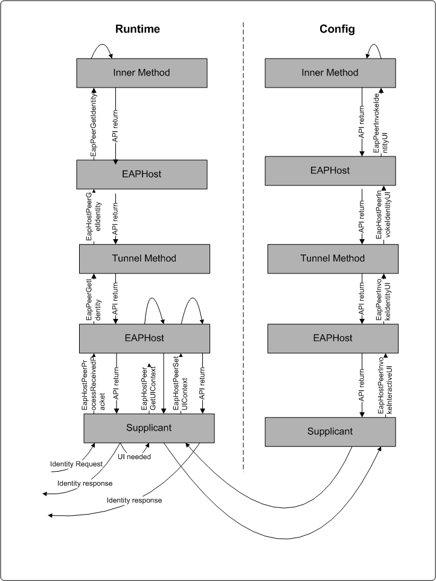

This topic covers the API call sequence for Tunnel Methods
When Supplicant gets request for user identity and user data the following API call flow typically occurs.
In certain cases, when the identity is not available, or when the user must provide additional information, Eap Method raises a user interface dialog box on the supplicant.
In such cases following call sequence typically takes place to get information directly from the user.
Tunnel Eap Method returns action code to invoke UI to EapHost. Supplicant calls EapHostPeerGetUIContextto obtain the current user interface context information for the user interface dialog box.
Supplicant then calls EapHostPeerInvokeInteractiveUI. This function uses the UI context information to raise an interactive user interface which is used to get credential information from the user. The UI process loads Eappcfg.dll and obtains the pointers to EapPeerInvokeInteractiveUI and EapPeerFreeMemory.
[!Note]
UI process typically collects UI or handles interactive UI and is separate from the supplicant process. Separating the two processes is not a requirement of EAPHost, but doing so has the advantage of allowing the UI process to interact with the desktop.
Â
EapHost calls EapPeerInvokeIdentityUI on tunnel method to obtain user identity information.
In order to obtain user identity from inner method, tunnel method calls EapHostPeerInvokeIdentityUI on inner EAPHost.
Inner EAPHost calls EapPeerInvokeIdentityUI on inner method to invoke user identity UI.
EapHostPeerSetUIContext provides a new or updated UI context information to the EAP peer method loaded on EAPHost after the UI has been raised.
Following diagram explains the API Call Sequence for Tunnel Methods

EAPHost Supplicant API Reference
Â
Â